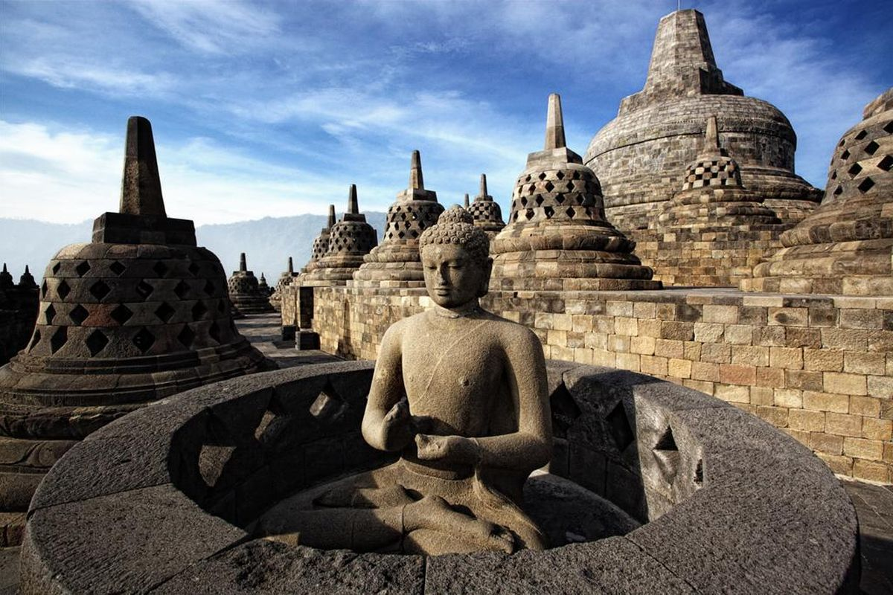

Jejak Sejarah Dinasti Syailendra
Dibangun pada abad ke-8 hingga ke-9 Masehi, Candi Borobudur menjadi bukti kecanggihan teknik sipil, seni pahat, dan spiritualitas Nusantara.

Monumen Buddha Terbesar di Dunia
Candi Borobudur dibangun oleh para penganut Buddha Mahayana pada masa pemerintahan Wangsa Syailendra. Monumen ini dirancang menyerupai mandala raksasa dari susunan sekitar 2 juta balok batu andesit yang dikunci menggunakan sistem sambungan tanpa semen (interlocking).
Terletak di lembah subur yang dikelilingi Gunung Merapi, Merbabu, Sindoro, dan Sumbing, Borobudur sempat terkubur abu vulkanik dan tertutup hutan lebat selama berabad-abad sebelum ditemukan kembali dan dipugar secara besar-besaran.
Dari Penemuan Kembali Hingga Situs UNESCO
Perjalanan panjang pelestarian Candi Borobudur melibatkan kolaborasi para arkeolog lokal dan dunia internasional agar tetap kokoh berdiri.
Jelajahi Arsitektur CandiPenemuan Kembali oleh Sir Thomas Stamford Raffles
Mendapat laporan adanya bukit batu berukir di Bumisegoro, Raffles mengutus Cornelius untuk membersihkan semak belukar yang menutupi candi.
Pemugaran Pertama oleh Theodoor van Erp
Upaya restorasi awal difokuskan pada perbaikan lantai teras atas, penyusunan kembali stupa-stupa berlubang, dan dokumentasi fotografi relief.
Pemugaran Besar Pemerintah RI & UNESCO
Lebih dari satu juta balok batu dibongkar, dibersihkan, diberi lapisan kedap air serta sistem drainase modern, lalu dipasang kembali.
Ditetapkan sebagai Warisan Dunia UNESCO
Kompleks Candi Borobudur resmi diakui sebagai Situs Warisan Budaya Dunia yang harus dijaga kelestariannya oleh seluruh umat manusia.
Eksplorasi Tiga Alam Kosmologi
Pilih tingkatan di bawah untuk memahami perjalanan spiritual pengunjung saat menaiki anak tangga Candi Borobudur.

Kamadhatu — Alam Nafsu Duniawi
Melambangkan dunia yang masih terikat oleh hawa nafsu dan hukum sebab-akibat (karma). Pada bagian kaki candi tersembunyi 160 panel relief Karmawibhangga yang menggambarkan perilaku manusia serta konsekuensinya.
160 Panel Relief • Pondasi Utama